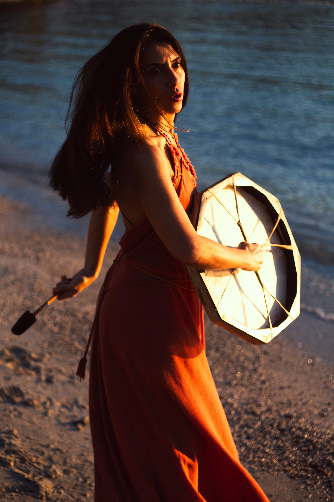
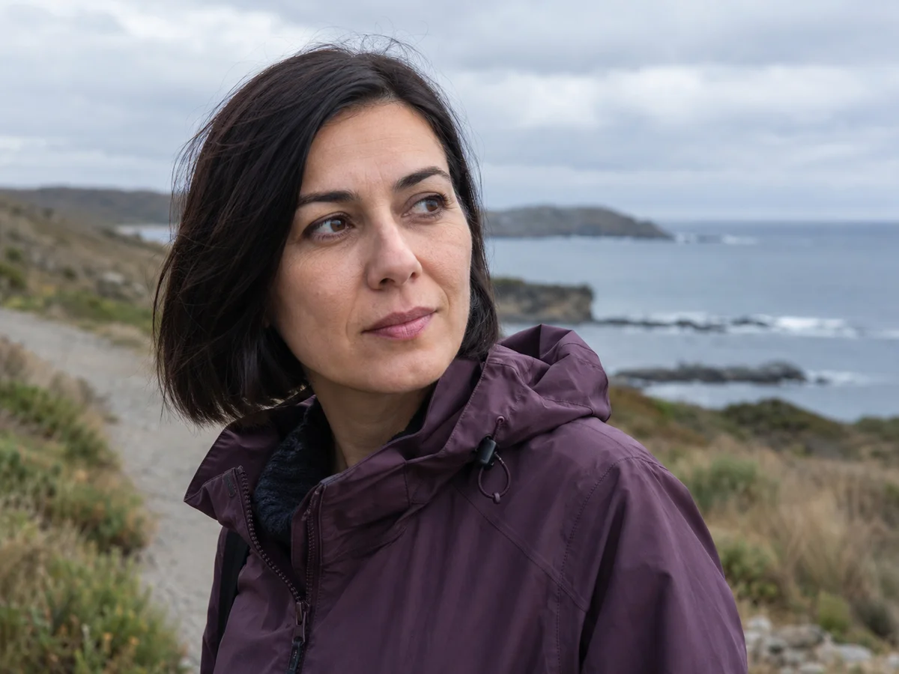
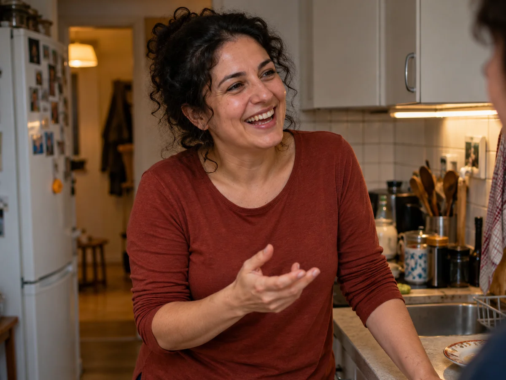

01
Haftalık canlı buluşmalar
Her Çarşamba 2 saat birlikteyiz. Haftanın malzemesini buraya getiriyor; sesle, sözle ve yaptığın şeyin kendisiyle çalışıyoruz.


“Bir gün” dediğin şeyi altı hafta içinde dünyayla buluştur.
dediğin şey hayatında yok değil.
Defterlerinde izleri var. Telefonunda ses kayıtları var. Bir dosya açtın, birkaç sayfa yazdın. Bir eğitim aldın. Sonra bir tane daha. Arkadaşlarına anlattın.
Hazırlığı var. Niyeti var. Malzemesi var. Ama kendisi yok.
Hâlâ içerideki kadar gerçek değil.
Artık onunla bir şey yap.
Evdeki Ses, içinde uzun zamandır taşıdığı bir şeyi hayata geçirmek isteyen kadınlar için altı haftalık canlı bir grup programı.
6 Hafta · Her Çarşamba · 10 Kişi
Sende canlı olan yerden başlıyor, onunla çalışıyor ve program bitmeden ona biçim verip dünyayla buluşturuyorsun.
Belki başladın.
Sonra başka bir fikir geldi. Adını değiştirdin.
Biraz daha araştırdın.. Tam ilerlerken başka sesler araya girdi:
Bu iyi mi? ..bunu kim ister?
..böyle mi yapmalıyım? Yoksa başka türlü mü?
Ve yapmak istediğin şeyle arandaki mesafe yeniden açıldı.
Seni tekrar tekrar çağıran şeyden başlarsın. Belki üç yıldır dönüp durduğun tek bir cümleden.
İki yön arasında kaldığında yalnızca hangisinin daha mantıklı olduğuna bakmazsın. Birini anlatırken savunmaya geçtiğini, ötekini anlatırken yeni cümlelerin gelmeye devam ettiğini duyarsın.
Sürekli başa döndüğün yeri fark edersin. Bir şeyi daha ortaya çıkmadan düzeltmeye başladığın anı da.
Bazı sorularla başlarız.
Asıl sorular yaptığın şeyin içinde belirir.
Verdiğin cevap da işi değiştirir.
Altı hafta boyunca çalıştığın şey biçim kazanır.
Bir teklif. Bir atölye. Bir eser.
Bir işin ilk çalışan hâli.
Ya da işinin kendi istediğin başka bir biçim.
Belki beklediğin yere cevap vermez.
Belki senin küçük gördüğün bir şeyi hemen fark eder.
Belki ilk karşılık sende her şeyi değiştirme isteği uyandırır.
Karşılığı duyarsın, ama direksiyonu ona vermezsin.
Dışarıdan gelenle sende olanı karıştırmadan yeniden seçersin.
Uzun zamandır “bir gün” dediğin şeyin dünyada bir karşılığı olacak.
Söyleyeceğin şeyi henüz bilmezsin, ama göğsünde bir şey kıpırdamıştır bile.
Ses üzerine çalışan bazı eski gelenekler, sesi kulağın işittiği yerde başlatmaz. Sufi müzisyen Hazrat Inayat Khan, sesin sırrının onun geldiği yerde saklı olduğunu söyler.
Evdeki Ses de oradan başlar.
O kıpırtının dünyaya çıkana kadar geçtiği bir yol var. Herkes onu bir yerinden tanır:
- Bir cümle boğazına kadar gelir, geri döner.
- Günlerce seni çağıran fikrin başına tam oturduğunda başka sesler konuşmaya başlar.
- Yazdığını yüksek sesle okursun ve kâğıtta göremediğin şeyi duyarsın.
Aynı cümleyi iki insan söyler. Kelimeler aynıdır. Birininki geçip gider, ötekininki sende kalır.
Aynı kıpırtı yol boyunca söze, işe, teklife dönüşür; biçimi değişir. Ama gücü, doğduğu yerle bağını ne kadar koruduğundan gelir.
Bir şeyin tesiri, yalnızca ne söylediğinde değil, nereden söylediğinde saklıdır.
Altı hafta boyunca
bu yolun tamamıyla çalışıyoruz:
göğsündeki ilk kıpırtıdan dünyada birine değen işe kadar.
Program boyunca seçtiğin şeyin başına tekrar tekrar dönüyorsun. Bunun için haftada en az 45 dakika ayırmanı öneriyoruz.
Her Çarşamba 2 saat birlikteyiz. Haftanın malzemesini buraya getiriyor; sesle, sözle ve yaptığın şeyin kendisiyle çalışıyoruz.
Her hafta, o haftanın çalışmasını açan kayıtlı bir video ders. Neye kulak vereceğimizi ve bunun yaptığın şeyle ilişkisini burada kuruyoruz.
Her gün 8–10 dakikalık rehberli bir ses kaydı. İçeride hareket edeni yeniden duyabileceğin küçük bir temas alanı.
Ses, nefes, beden, hareket ve imgeyle çalışan yaklaşık 15 dakikalık pratikler. Video ya da ses kaydı olarak, kendi zamanında.
Hafta boyunca yanında taşıyacağın küçük yazılı araştırmalar. Gördüğünü, duyduğunu ve denediğini üzerinde çalıştığın şeye taşıyorsun.
Her haftanın sorularını, fark ettiklerini ve kararlarını taşıyan çalışma materyalleri. Altı haftanın sonunda burada biriken izler, kendi yaratım sürecine dönüp bakabileceğin kişisel Yaratıcı Ses Haritana dönüşüyor.
Her hafta partnerinle 20–25 dakika buluşuyor, yaptığın şeyi paylaşıyor ve onda ne kaldığını duyuyorsun.
Programın çalışma biçimiyle kurulmuş kişisel bir yapay zekâ alanı. Canlı buluşmaların arasında kaldığın yerden işe girmek için.
İşin biçim kazanmaya başladığında canlı buluşmaların bir bölümü tezgâha dönüşüyor. Kameralar açık, mikrofonlar kapalı, herkes kendi işinin başında.
Her hafta isteğe bağlı birkaç davet. Kendi malzemene sesle, hareketle, nesnelerle ya da küçük ritüellerle başka bir yerden yaklaşmak için.
Her gün 8–10 dakikalık Günlük Akort. Haftada bir kez 2 saatlik canlı buluşma. Hafta içinde kendi zamanına yerleştireceğin video ders, rehberli pratik, küçük araştırmalar, workbook ve partner buluşması.
Bir de üzerinde çalıştığın şeyin başına döndüğün zaman var. Bunun için haftada en az 45 dakika ayırmanı öneriyoruz. Daha fazlası, yaptığın şeyin doğasına ve kendi hayatındaki alana bağlı.
Oyun Alanı isteğe bağlı ve bu ritmin dışında.
Evdeki Ses'e ne yapmak istediğini bilerek de gelebilirsin, yalnızca içinde bir şeyin biriktiğini bilerek de.
Altı hafta boyunca kendi malzemenin başına tekrar tekrar dönüyorsun. Sesinle ve bedeninle çalışıyorsun; burada önemli olan iyi söylemek değil, duymak. Yaptığın şeyi partnerinle paylaşıyor ve program bitmeden dünyayla buluşturuyorsun.
Bunun için meraktan biraz daha fazlası gerekiyor: zaman ayırmaya, denemeye, seçim yapmaya ve başladığın şeyin yanında kalmaya istekli olman.
Buraya bir şeyi yanında taşımaya devam etmek için değil, onunla bir şey yapmak için geliyorsun.
Hayatımın büyük bölümünü bir şeylerin nasıl doğduğunu, biçim kazandığını ve dünyaya çıktığını yaşayarak geçirdim.
Beş yaşında aynanın karşısında doğaçlama yapmaya başladım. Doksanların sonlarında avangard müzik ve performansın içine girdim; sonra besteci, müzisyen ve ses sanatçısı olarak farklı alanlarda ürettim.
Beden ve hareket de uzun yıllardır pratiğimin bir parçası. Yoga, dans ve somatik çalışmaların yanı sıra mit, ritüel, derin dinleme ve farklı ses gelenekleri üzerine çalıştım.
2015’te Ses Kaşifleri’ni kurdum. O zamandan beri ses ve doğaçlama üzerine çalışmalar yürütüyor, Ses ile Şifa Uygulayıcılık Eğitimleri veriyorum.
Evdeki Ses, otuz yıla yaklaşan bütün bu pratiğin içinden çıktı.
Nilüfer Ormanlı’nın önceki bireysel çalışmalarına ve eğitimlerine katılan kişilerin kendi sözleriyle deneyimleri.
“Sesin bedene ilmek ilmek örülü olduğunu… gösterdi. Her görüşme sonrası bedenimin bir parçası çiçeğe duruyor ve sesim çiçeğin etrafında arı gibi vızıldamaya başlıyordu.”

“Ses eğitimi diye başladığım eğitim sırasında önce bedende yarattığım sıkışıklıkları fark ettim, ve günlük hayatımda bu daralmaları başka nerelerde yaşadığıma bir ayna görevi yapmaya başladı… Yine gündelik hayatımda, işimde netlikler kazanmaya başladım.”
“Çocuksu oyunbazlığım ortaya çıktığında buna hem aynı şekilde karşılık verebilecek çocuksu bir ruh, hem de alanı ve olanı tutabilecek olgun bir ruha ihtiyaç duyarım; işte Nilüfer ikisini de taşıyan bir can.”
“Her yaptığımız ders, elimde kendime ait bir hediyeyle bitti.”
“Daha ilk gün bile kapınızdan çıkarken hafiflediğimi hissetmiştim. Bana kendimi sevmeyi, bedenimi sevmeyi hatırlattığınız […] için minnettarım.”

“Dokuz aylık bir süreci birlikte geçirdiğim, bilgisine, tecrübesine güvendiğim, nefes terapisi, ses terapisi, farklı meditasyon teknikleri, nefesoloji ve adını bilmediğim farklı tekniklerle uzun ve çok da kolay olmayan zamanlarda bana şifa olan, çok şey öğrendiğim rehberliğine güvendiğim Nilüfer Ormanlı’nın sizlere de şifa olmasını umarım ve canıgönülden tavsiye ederim.”
6 hafta boyunca canlı buluşmalar, günlük ve haftalık rehberli çalışmalar, kendi malzemen üzerinde çalışma, partner desteği ve Evdeki Ses asistanıyla birlikte ilerliyorsun.
İptal, cayma ve iade koşullarını satın alma öncesinde Ön Bilgilendirme Metni’nde ve Mesafeli Satış/Hizmet Sözleşmesi’nde bulabilirsin. Uygulanabilir zorunlu tüketici hakları saklıdır. Soruların için: hello@niluferormanli.studio.
Evdeki Ses, yalnızca izlemeye dayalı bir eğitim değil; ses, beden ve ifadeyi birlikte araştırdığımız, aktif katılımlı canlı bir grup çalışmasıdır. Buluşmalarda kamera ve mikrofonla katılım beklenir. Kişisel deneyimlerini paylaşmak zorunda değilsin; ihtiyaç duyduğunda kameranı veya mikrofonunu geçici olarak kapatabilirsin.
Evdeki Ses yalnızca 18 yaşını doldurmuş yetişkinlere açıktır. Programın kapsamı ve uzmanlık alanımız 18 yaş altındakilerin katılımına uygun değildir.
Canlı buluşmalar kaydedilmez. Kaçırdığın bir buluşmanın kaydını izleme veya bireysel telafi imkânı sunulmaz. Önceden hazırlanmış eğitim içerikleri bundan ayrıdır.
Evdeki Ses yaratıcı ve deneyimsel bir grup çalışmasıdır; psikoterapi, tıbbi tedavi veya kriz desteği değildir. Belirli bir kişisel dönüşüm ya da sonuç garanti edilmez.
Program 11 Kasım 2026’da başlar. Üyelik alanı, program materyalleri ve isteğe bağlı yapay zekâ asistanı bu tarihten önce açılmaz. Program alanına erişim 15 Ocak 2027 saat 23.59’da (Türkiye saati) sona erer.